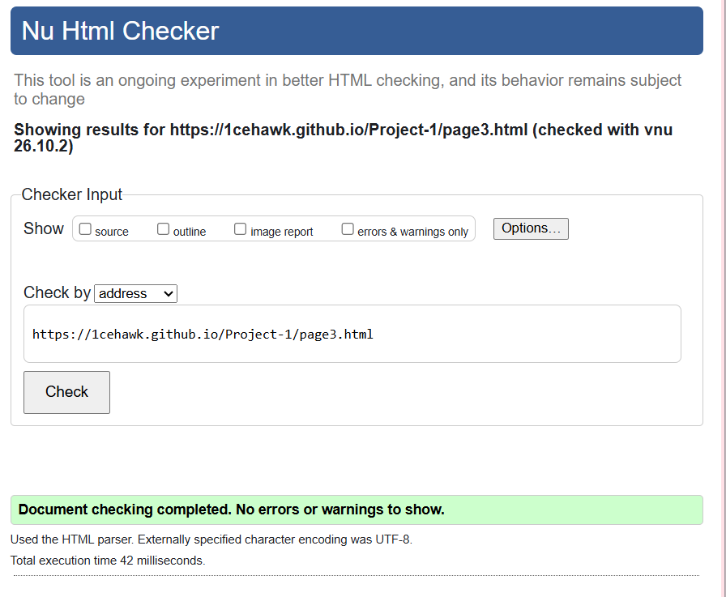

Cybersecurity is one of the fastest-growing fields in technology. As cyber threats continue to evolve, organizations need skilled professionals who can protect networks, systems, and data. My goal is to work in a role that allows me to apply my technical skills and contribute to building secure digital environments.
I enjoy solving complex problems, analyzing systems, and learning how technology works. Cybersecurity combines all of these interests while also providing opportunities to make a meaningful impact. Protecting people and organizations from cyber attacks is both challenging and rewarding.
